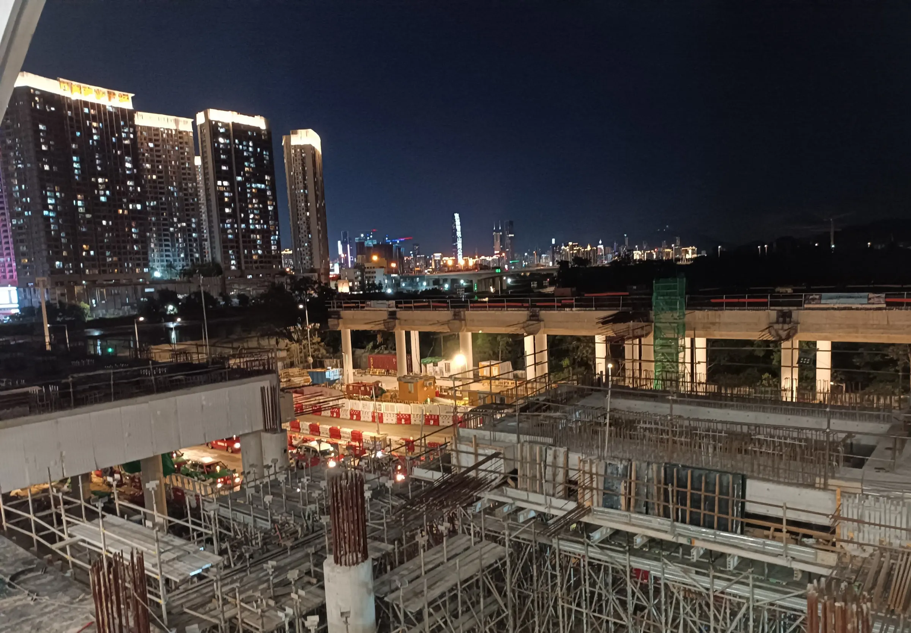
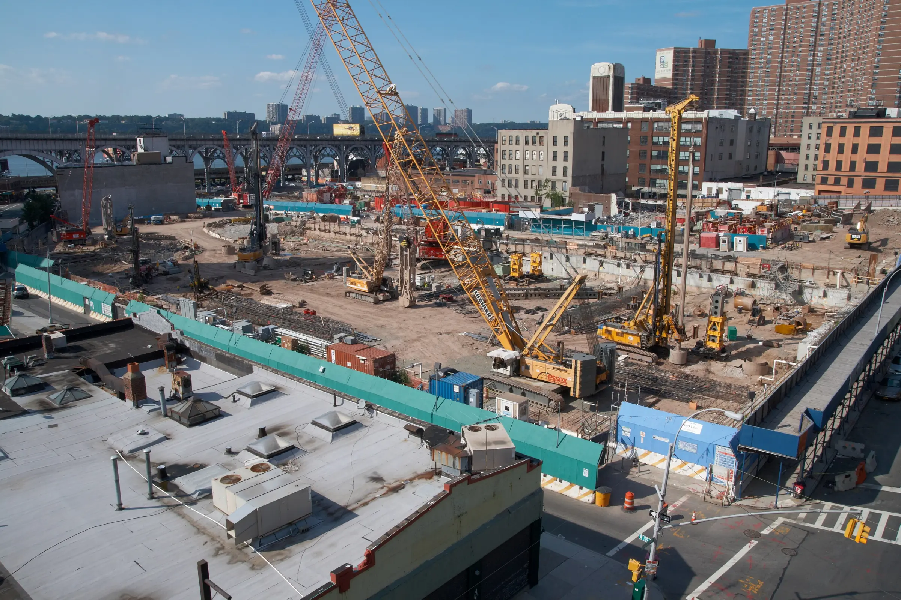
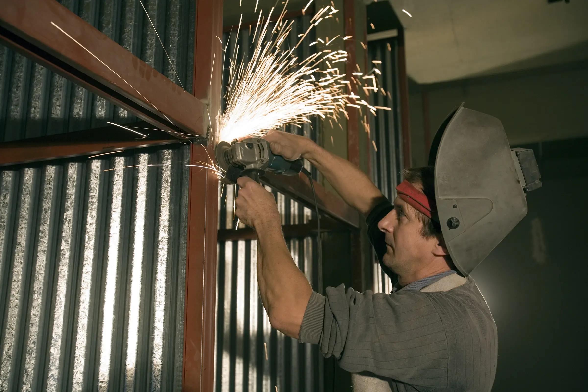
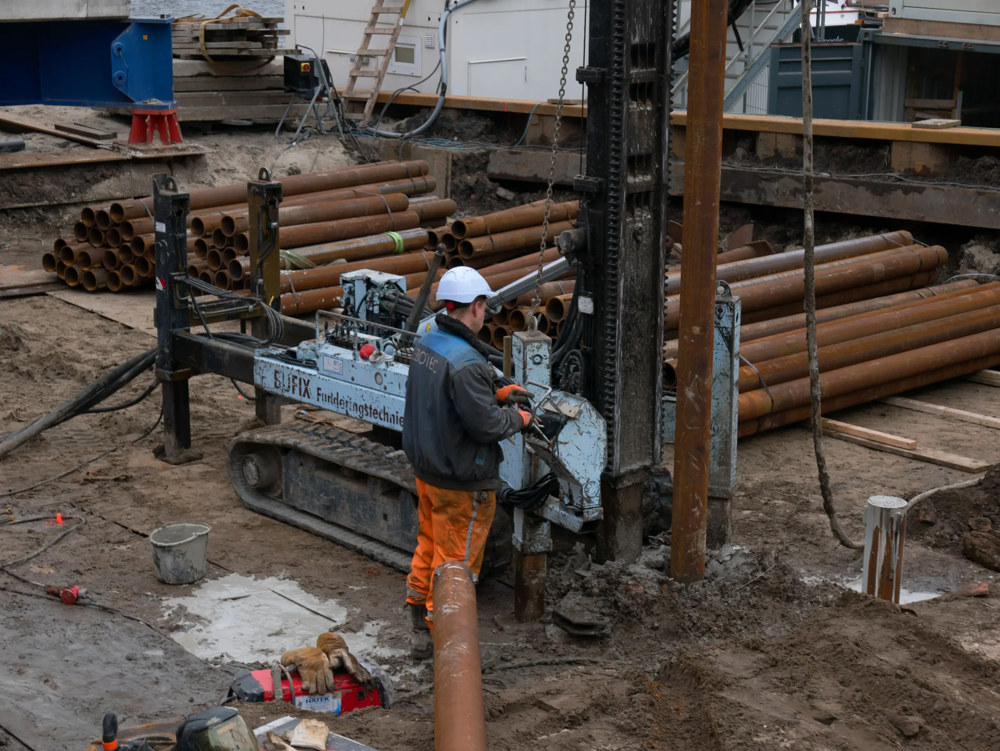
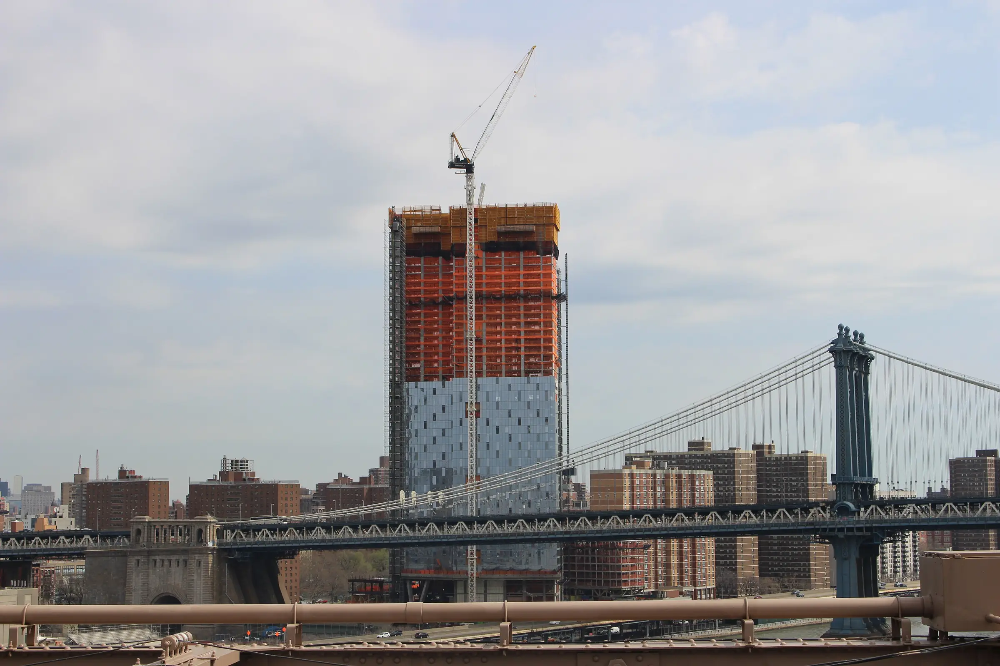
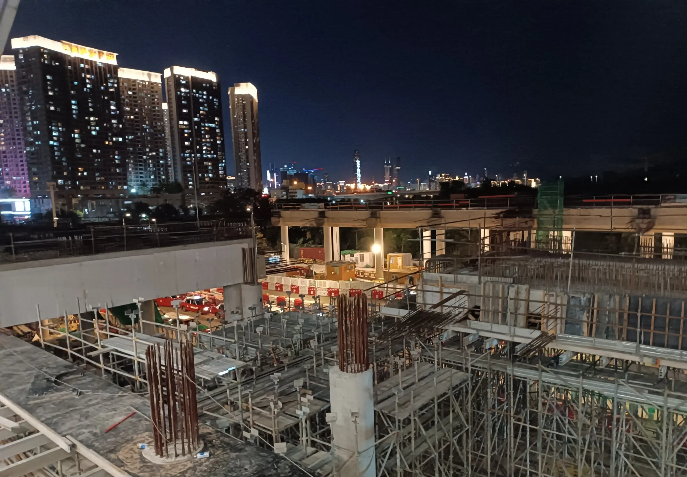
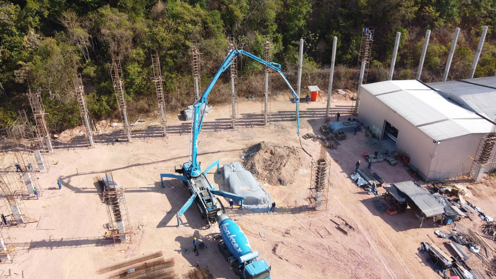
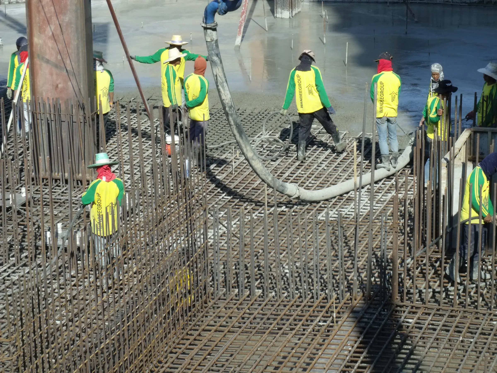

Credits
Photo credits.
The construction-site photographs on this concept website come from Wikimedia Commons and are used under the licenses below. Some are cropped. Product photos of Power Rentals equipment come from the Power Rentals catalog.

HK YLD 元朗 Yuen Long 落馬洲路 Lok Ma Chau Road 關口 Control Port construction site night July 2024 R12S 01LaouZEI bOENFUOO · CC0 · Wikimedia Commons
Construction site NW of the Broadway and W 129th St intersection, ManhattanMagnus Bäck · CC BY 3.0 · Wikimedia Commons Hi Line construction above 30 jehJim.henderson · CC0 · Wikimedia Commons
Hi Line construction above 30 jehJim.henderson · CC0 · Wikimedia Commons
Steel iron construction worker - 8338Jorge Royan · CC BY-SA 3.0 · Wikimedia Commons
2025 - free image of a building worker at a construction site - drilling rusty piles in the peat soil for the foundation. Construction photography Amsterdam city by Fons Heijnsbroek; free download urban photo, The NetherlandsFons Heijnsbroek · CC0 · Wikimedia Commons
One Manhattan SquareBecker747400 · CC BY-SA 4.0 · Wikimedia Commons
HK YLD 元朗 Yuen Long 落馬洲路 Lok Ma Chau Road 關口 Control Port construction site night July 2024 R12S 02LaouZEI bOENFUOO · CC0 · Wikimedia Commons
Concrete boom pump truckBernardobenzecry · CC BY-SA 4.0 · Wikimedia Commons
Workers of Wandeegroup (Thailand) Company LimitedMeow2021 · CC BY-SA 4.0 · Wikimedia Commons


_Company_Limited.jpg){kind=link}